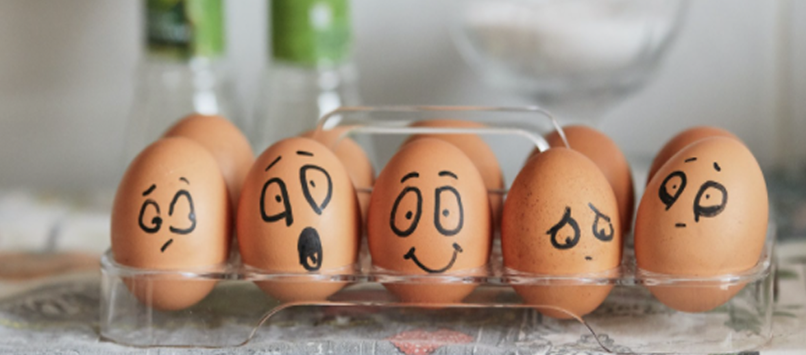

Как понять, что вы страдаете от тревоги?
Тревога — это естественная реакция организма на стресс. Но когда она становится хронической, это может мешать нормальной жизни. Важно научиться распознавать первые признаки тревожного расстройства.
Мы знаем, что нуждаться в помощи и поддержке в трудные периоды жизни абсолютно нормально для любого человека, и стремимся сделать психотерапию безопасной, удобной и доступной каждому.
Тревогу можно разложить перед собой на целую коллекцию поступков и выбрать нужный
Стадии профессионального выгорания

Специалисты выделяют три основные стадии выгорания. На первой стадии человек начинает испытывать эмоциональное истощение — постоянную усталость, снижение тонуса, проблемы со сном. Вторая стадия характеризуется деперсонализацией — появляется циничное отношение к работе и коллегам. На третьей стадии происходит редукция личных достижений — человек перестает верить в свои профессиональные навыки.
Что ещё можно делать с тревогой?
- Управлять ей через что-то внешнее: включить музыку, которая создаёт другое настроение
- Сесть за работу с информацией, которая быстро активирует другие участки мозга
- Читать блоги, которые вас успокаивают и отвлекают
- Иногда можно разрешить себе тревогу и заесть её чем-то вкусным
Упражнение #1
Нужно последовательно напрягать или расслаблять каждую мышцу в теле на несколько секунд. Напрягать стоит довольно сильно, чтобы потом отчётливее ощущать расслабляющий эффект. Начать можно с пальцев ног и постепенно подниматься вверх. Смысл в том, чтобы через напряжение дать стрессу выход, а затем снова привести себя в спокойное состояние через расслабление.
Упражнение #2
Практика осознанности помогает снизить уровень тревоги. Попробуйте в течение нескольких минут просто наблюдать за своим дыханием, не пытаясь его изменить. Когда мысли отвлекают — мягко возвращайте внимание к дыханию.
Важно: Если тревога мешает вам жить полноценной жизнью, обратитесь к специалисту. Профессиональная помощь поможет быстрее восстановиться.